Page 200
Module 3 — Industrial Graphics | Pages 187-206
Lab 5 – Creating Symbols for Automation Objects
Lab 5 – Creating Symbols for Automation
Objects
Introduction
In this lab, you will create symbols for equipment modeled in the Galaxy, such as valves, agitators,
pumps, and others. You will use symbols from the Situational Awareness Library, and then
configure them to meet the requirements of the corresponding equipment.
Once the new symbols are created and configured, you will associate them with corresponding
template objects using the Link Content feature.
Objectives
Upon completion of this lab, you will be able to:
Link symbols to template objects
Configure symbols with custom properties using relative references
Duplicate symbols
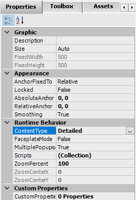
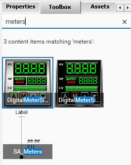
Create Symbols
In the following steps, you will create some new symbols on the Graphics tab and configure them
in the Graphic Editor.
1.
On the Graphics tab, right-click the Training \ Symbols toolset and select New | Symbol.
2.
Rename the new symbol to Level_Detailed.
3.
Double-click Level_Detailed to open it in the Graphic Editor.
You can maximize the editor to get a better view.
4.
On the Properties tab, for the Runtime Behavior \ ContentType property, change the
content type to Detailed.
5.
On the Toolbox tab, in the Search field, enter meters as a search string.
Content items matching meters are found.
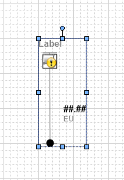
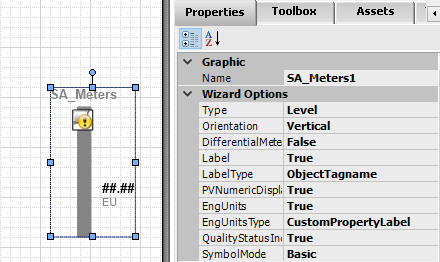
Lab 5 – Creating Symbols for Automation Objects
6.
From the Toolbox tab preview area, drag SA_Meters to the drawing canvas.
7.
With SA_Meters1 selected, on the Properties tab, configure properties as follows:
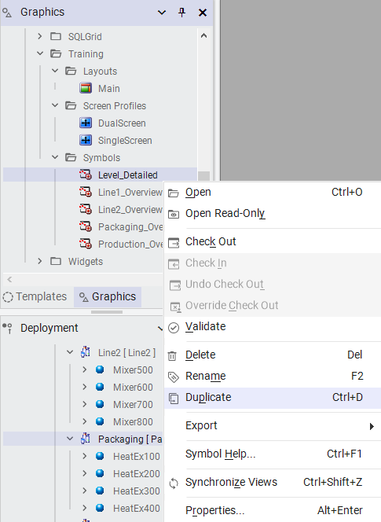
• Packaging [Pa...] (expanded): HeatEx100, HeatEx200, HeatEx300, HeatEx400]
9.
On the Graphics tab, in the Training \ Symbols toolset, right-click Level_Detailed and select
Duplicate.
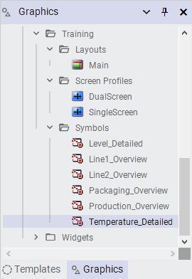
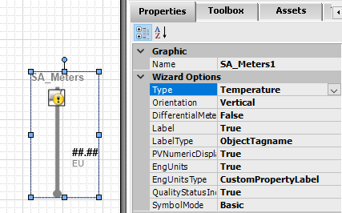
Lab 5 – Creating Symbols for Automation Objects
A duplicate symbol named Level_Detail_Copy1 is created in the Training \ Symbols toolset.
10. Rename the duplicate symbol to Temperature_Detailed.
11. Double-click Temperature_Detailed to open it in the Graphic Editor.
12. Ensure SA_Meters1 is selected on the drawing canvas, and then on the Properties tab,
change the Wizard Options \ Type property to Temperature.
13. Save and close the Temperature_Detailed symbol, and check it in.
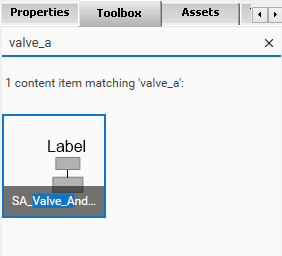
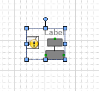
14. On the Graphics tab, right-click the Training \ Symbols toolset and select New | Symbol.
15. Rename the new symbol to Valve_Detailed.
16. Double-click Valve_Detailed to open it in the Graphic Editor.
17. On the Properties tab, for the Runtime Behavior \ ContentType property, change the
content type to Detailed.
18. On the Toolbox tab, in the Search field, enter valve_a as a search string.
A content item named SA_Valve_And_Damper is found.
19. From the Toolbox tab preview area, drag SA_Valve_And_Damper to the drawing canvas.
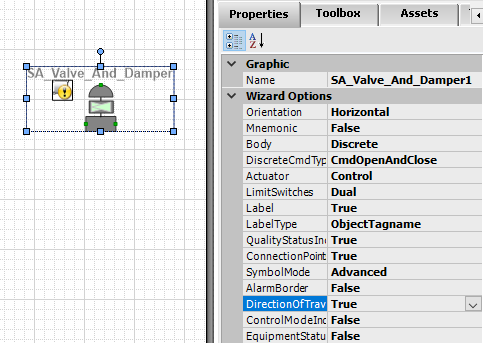
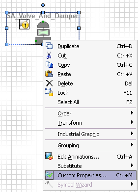
Lab 5 – Creating Symbols for Automation Objects
20. With SA_Valve_And_Damper1 selected, on the Properties tab, configure properties as
follows:
21. Right-click SA_Valve_And_Damper1 and select Custom Properties.
Wizard Options \ DiscreteCmdType:
CmdOpenAndClose
Wizard Options \ Actuator:
Control
Wizard Options \ LimitSwitches:
Dual
Wizard Options \ LabelType:
ObjectTagname
Wizard Options \ SymbolMode:
Advanced
Wizard Options \ DirectionOfTravelIndicator:
True
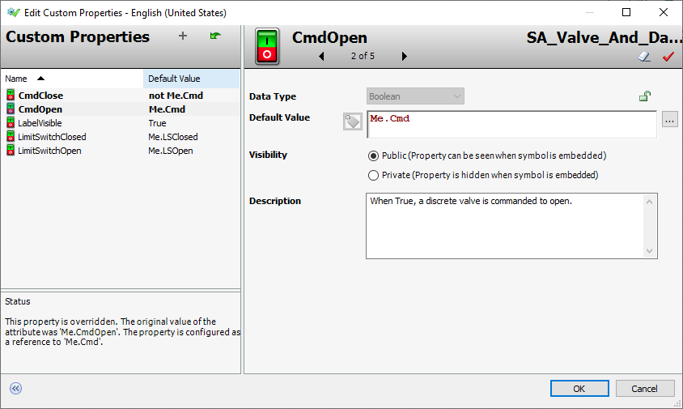
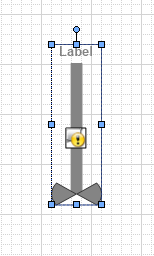
22. In the Edit Custom Properties dialog box, configure default values for the custom properties
as follows:
23. Click OK to close the Edit Custom Properties dialog box.
24. Save and close the Valve_Detailed symbol, and check it in.
25. On the Graphics tab, right-click the Training \ Symbols toolset and select New | Symbol.
26. Rename the new symbol to Agitator_Detailed.
27. Double-click Agitator_Detailed to open it in the Graphic Editor.
28. On the Properties tab, for the Runtime Behavior \ ContentType property, change the
content type to Detailed.
29. On the Toolbox tab, in the Search field, enter agitator.
30. From the Toolbox tab preview area, drag SA_Agitator_Settler to the drawing canvas.
Name
Default Value
CmdClose:
not Me.Cmd
CmdOpen:
Me.Cmd
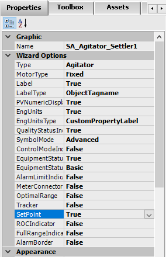
Lab 5 – Creating Symbols for Automation Objects
31. With SA_Agitator_Settler1 selected, on the Properties tab, configure properties as follows:
Wizard Options \ LabelType:
ObjectTagname
Wizard Options \ PVNumericDisplay:
True
Wizard Options \ EngUnits:
True
Wizard Options \ EngUnitsType:
CustomPropertyLabel
Wizard Options \ SymbolMode:
Advanced
Wizard Options \ EquipmentStatusIndicator:
True
Wizard Options \ SetPoint:
True
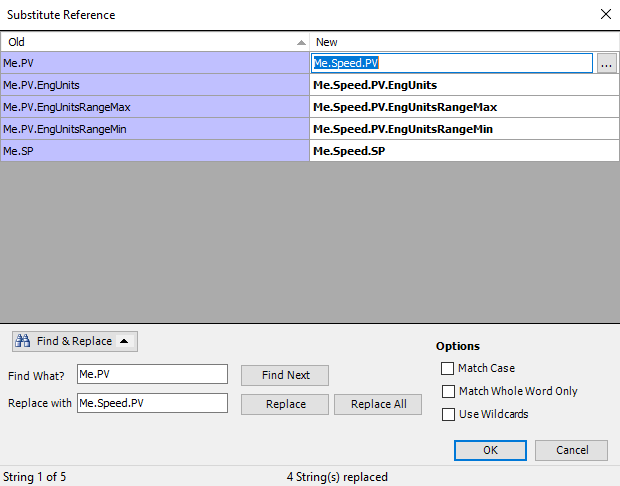
32. On the drawing canvas, right-click SA_Agitator_Settler1 and select Substitute | Substitute
References.
33. In the Substitute Reference dialog box, use Find & Replace to replace the following:
Important: When you are finished, ensure that the references in the New column are as
shown below.
34. Click OK to close the Substitute Reference dialog box.
Find What?
Replace with
Click to Replace
Me.SP
Me.Speed.SP
Click Replace All.
Me.PV
Me.Speed.PV
Click Replace All.
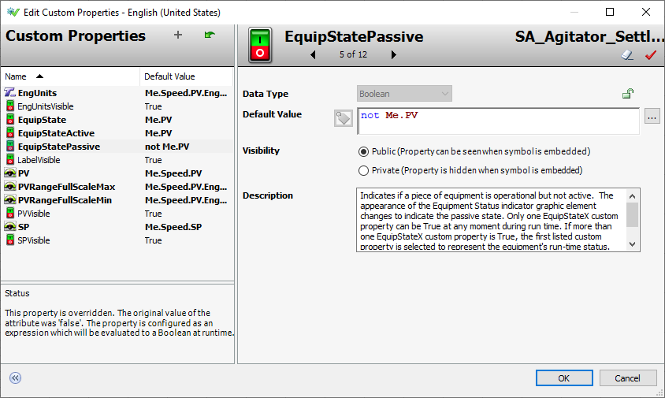
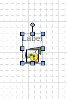
Lab 5 – Creating Symbols for Automation Objects
35. Right-click SA_Agitator_Settler1 on the drawing canvas and select Custom Properties.
36. In the Edit Custom Properties dialog box, configure default values for the custom properties
as follows:
37. Click OK to close the Edit Custom Properties dialog box.
38. Save and close the Agitator_Detailed symbol, and check it in.
39. On the Graphics tab, in the Training \ Symbols toolset, create another symbol.
40. Rename the new symbol to Pump_Detailed.
41. Double-click Pump_Detailed to open it in the Graphic Editor.
42. On the Properties tab, for the Runtime Behavior \ ContentType property, change the
content type to Detailed.
43. On the Toolbox tab, enter a search string to find SA_Pump_Blower_RotaryValve.
44. From the Toolbox tab preview area, drag SA_Pump_Blower_RotaryValve to the drawing
canvas.
Name
Default Value
EquipState:
Me.PV
EquipStateActive:
Me.PV
EquipStatePassive:
not Me.PV
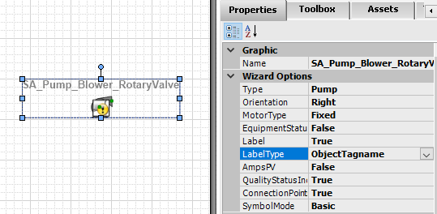
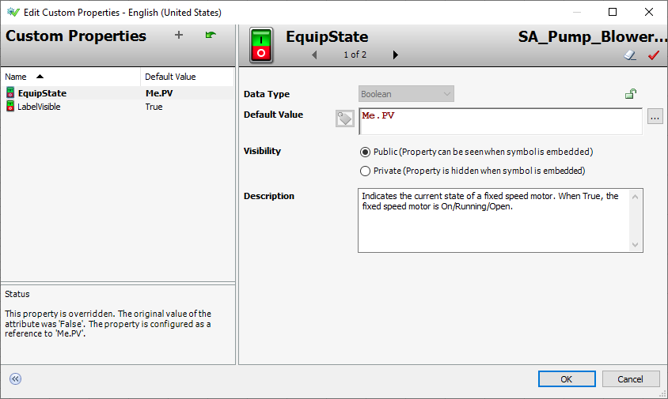
45. With SA_Pump_Blower_RotaryValve1 selected, on the Properties tab, configure properties
as follows:
46. Right-click SA_Pump_Blower_RotaryValve1 on the drawing canvas and select Custom
Properties.
47. In the Edit Custom Properties dialog box, configure a default value for the following custom
property:
48. Click OK to close the Edit Custom Properties dialog box.
49. Save and close the Pump_Detailed symbol, and check it in.
Wizard Options \ LabelType:
ObjectTagname
Name
Default Value
EquipState:
Me.PV
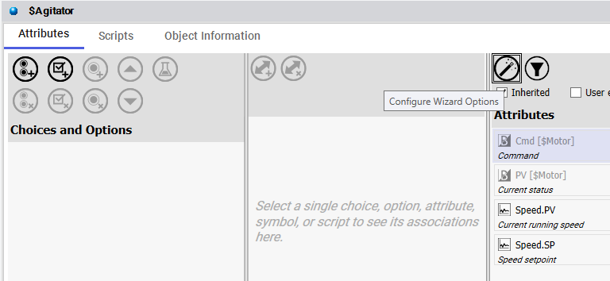
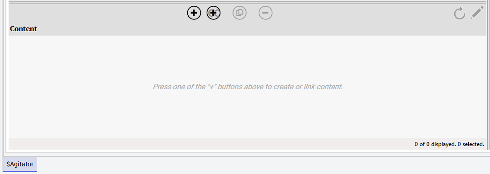
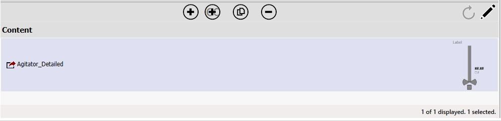
• Bottom text: "Select a single choice, option, attribute, symbol, or script to see its associations here."
Screenshot 2: Content Pane (Before Linking):
• Pane Label: "Content"
• Red Arrow: Points to "Link Content" button (plus icon)
• Text: "Press one of the '+' buttons above to create or link content."
• Status: "0 of 0 displayed, 0 selected."
• Tag: Agitator
Screenshot 3: Content Pane (After Linking):
• Now lists Agitator_Detailed (linked symbol)
• Right side: Small diagram of the Agitator_Detailed symbol (showing "Level" and "MV" labels)
• Status: "1 of 1 displayed, 1 selected."
• Step 50: Templates tab → Training \ Project → double-click $Agitator → Object Editor
• Step 51: Click "Configure Wizard Options" to hide wizard panes
• Step 52: Content pane → click "Link Content"
• Step 53: Galaxy Browser → Training \ Symbols → select Agitator_Detailed
• Step 54: Click OK]
Lab 5 – Creating Symbols for Automation Objects
Associate Symbols with Templates
In the following steps, you will associate the symbols you created in the previous steps with their
corresponding template objects.
50. On the Templates tab, in the Training \ Project toolset, double-click $Agitator to open it in
the Object Editor.
51. Click Configure Wizard Options to hide the object wizard configuration panes.
You can resize the Object Editor to get a better view.
52. In the Content pane, click Link Content.
The Galaxy Browser appears.
53. In the Galaxy Browser, in the Training \ Symbols toolset, select Agitator_Detailed.
54. Click OK to close the Galaxy Browser.
The Agitator_Detailed symbol is added to the Content pane.
55. Save and close the $Agitator object.
The Check-in dialog box appears, with a warning that the changes to the object will be
propagated to derived objects.
56. Read the warning, and then click Check-in to check in the object.
57. Repeat Steps 50 - 56 to link symbols with template objects as follows:
Edit Main Layout to AutoFill Detailed Content
In the following steps, you will open the Main layout in the Layout Editor to add the Detailed
content type for Pane1.
58. On the Graphics tab, in the Training \ Layouts toolset, double-click Main to open it in the
Layout Editor.
59. In the layout preview area, select Pane1.
Object
Symbol to Link
$Level
Level_Detailed
$Pump
Pump_Detailed
$Temperature
Temperature_Detailed
$Valve
Valve_Detailed
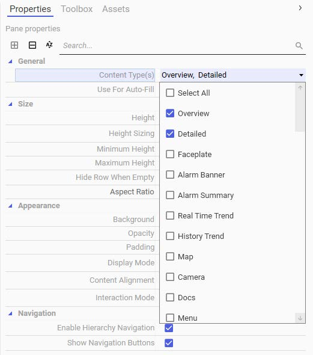
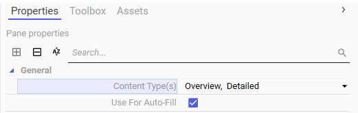
Lab 5 – Creating Symbols for Automation Objects
60. On the Properties tab, click the drop-down arrow next to the General \ Content Type(s)
property and check the Detailed content type.
The General \ Content Type(s) property reflects that Pane1 is configured for Overview and
Detailed content.
61. Save and close the Main layout, and check it in.
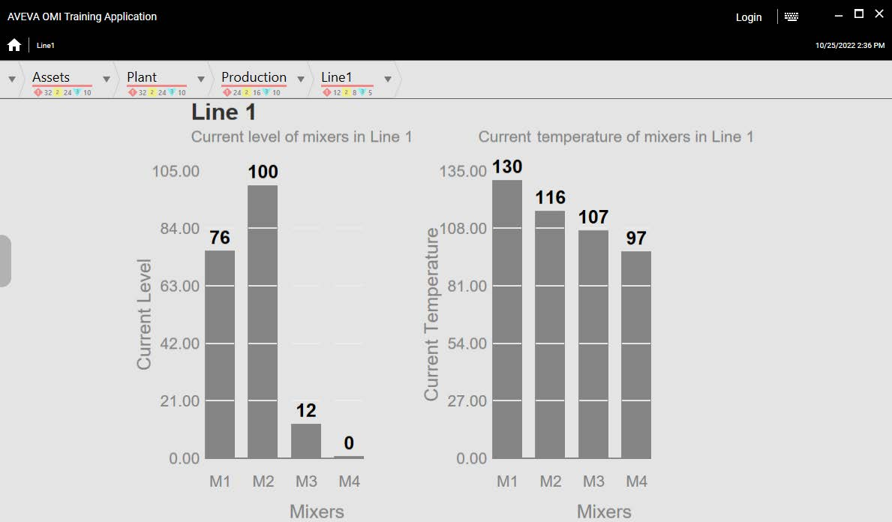
Test the ViewApp in a Preview Session
Now, you will test your changes in the preview session. Pane1 in the Main layout is now configured
for Overview and Detailed content types.
62. Switch to the preview session.
63. Navigate to Line1.
Notice that Pane1 shows the Overview symbol from the Line 1 area. The Overview symbol is
configured with the Overview content type.
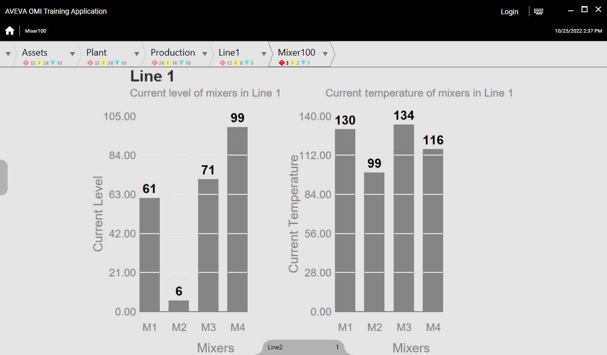
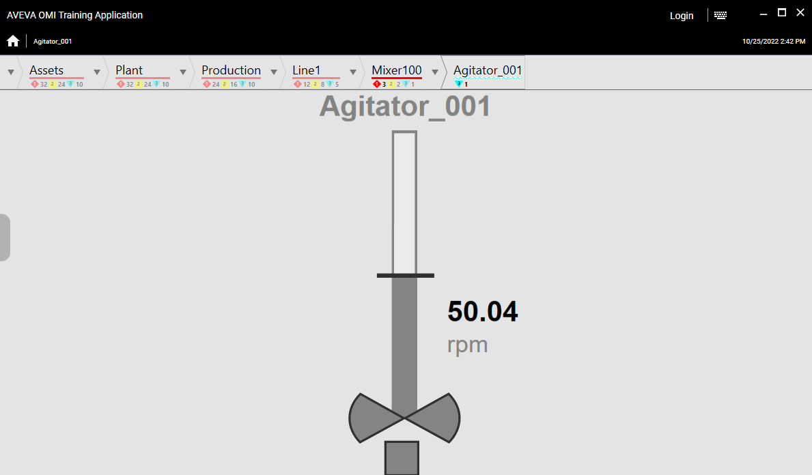
Lab 5 – Creating Symbols for Automation Objects
64. Navigate to Mixer100.
Notice that the Overview symbol from the Line 1 area still shows in Pane1.
65. Navigate to Agitator_001.
Notice that Pane1 shows the Agitator_001 symbol, which is configured with the Detailed
content type.
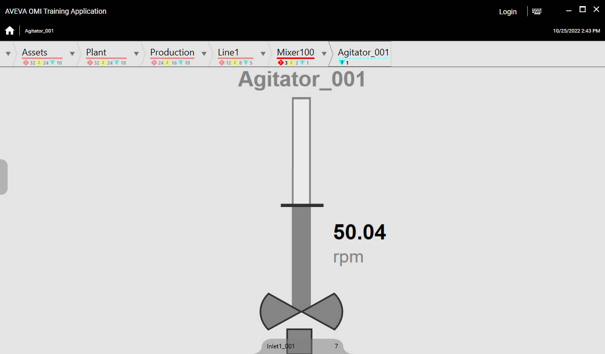
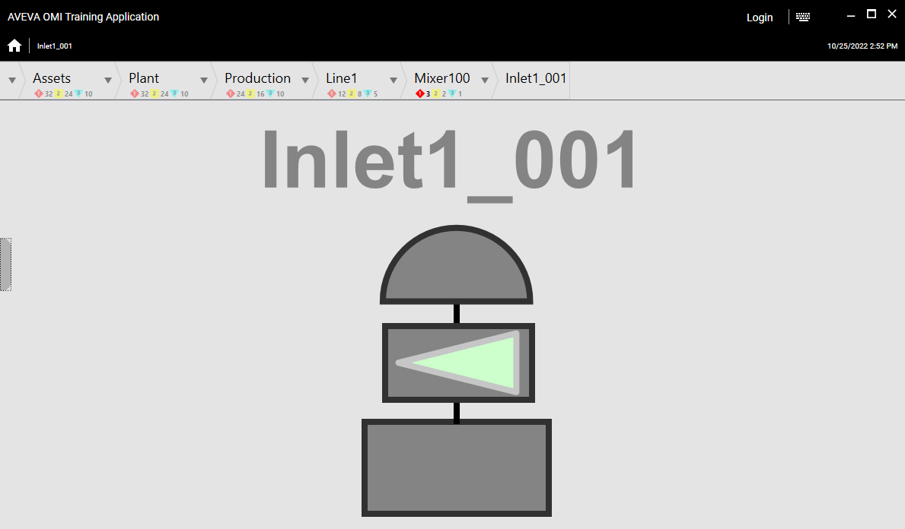
66. Hover your mouse at the bottom of Pane1 to show a navigation button.
67. Click the navigation button to navigate to Inlet1_001.
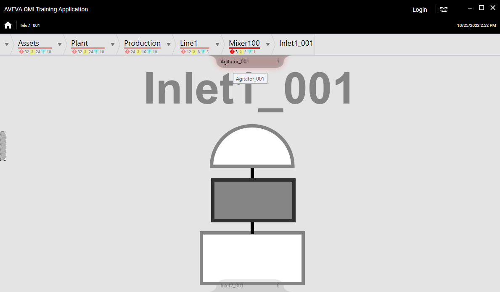
Lab 5 – Creating Symbols for Automation Objects
68. Hover your mouse at the top of Pane1 to show a navigation button.
69. Click the navigation button to navigate back to Agitator_001.
70. Now navigate to the following to see what displays:
Level_001
What do you expect to see? ______________________________________
Why? ________________________________________________________
Outlet_001
What do you expect to see? ______________________________________
Why? ________________________________________________________
Temperature_001
What do you expect to see? ______________________________________
Why? ________________________________________________________
Inlet1_002
What do you expect to see? ______________________________________
Why? ________________________________________________________
Pump1_002
What do you expect to see? ______________________________________
Why? ________________________________________________________
71. When you are finished testing, minimize the preview session.
Review the lab steps above and list the main configuration actions you completed.
Consider the dependencies between steps and how skipping one might affect the outcome.